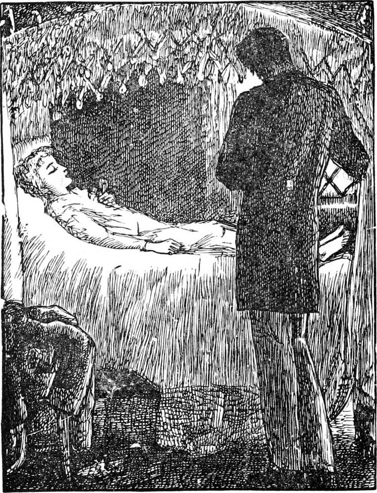

I DID not see Diamond for a week or so after this, and then he told me what I have now told you. I should have been astonished at his being able even to report such conversations as he said he had had with North Wind, had I not known already that some children are profound in metaphysics. But a fear crosses me, lest, by telling so much about my friend, I should lead people to mistake him for one of those consequential, priggish little monsters, who are always trying to say clever things, and looking to see whether people appreciate them. When a child like that dies, instead of having a silly book written about him, he should be stuffed like one of those awful big-headed fishes you see in museums. But Diamond never troubled his head about what people thought of him. He never set up for knowing better than others. The wisest things he said came out when he wanted one to help him with some difficulty he was in. He was not even offended with Nanny and Jim for calling him a silly. He supposed there was something in it, though he could not quite understand what. I suspect however that the other name they gave him, God's Baby, had some share in reconciling him to it.
Happily for me, I was as much interested in metaphysics as Diamond himself, and therefore, while he recounted his conversations with North Wind, I did not find myself at all in a strange sea, although certainly I could not always feel the bottom, being indeed convinced that the bottom was miles away.
“Could it be all dreaming, do you think, sir?” he asked anxiously.
“I daren't say, Diamond,” I answered. “But at least there is one thing you may be sure of, that there is a still better love than that of the wonderful being you call North Wind. Even if she be a dream, the dream of such a beautiful creature could not come to you by chance.”
“Yes, I know,” returned Diamond; “I know.”
Then he was silent, but, I confess, appeared more thoughtful than satisfied.
The next time I saw him, he looked paler than usual.
“Have you seen your friend again?” I asked him.
“Yes,” he answered, solemnly.
“Did she take you out with her?”
“No. She did not speak to me. I woke all at once, as I generally do when I am going to see her, and there she was against the door into the big room, sitting just as I saw her sit on her own doorstep, as white as snow, and her eyes as blue as the heart of an iceberg. She looked at me, but never moved or spoke.”
“Weren't you afraid?” I asked.
“No. Why should I have been?” he answered. “I only felt a little cold.”
“Did she stay long?”
“I don't know. I fell asleep again. I think I have been rather cold ever since though,” he added with a smile.

I did not quite like this, but I said nothing.
Four days after, I called again at the Mound. The maid who opened the door looked grave, but I suspected nothing. When I reached the drawing-room, I saw Mrs. Raymond had been crying.
“Haven't you heard?” she said, seeing my questioning looks.
“I've heard nothing,” I answered.
“This morning we found our dear little Diamond lying on the floor of the big attic-room, just outside his own door—fast asleep, as we thought. But when we took him up, we did not think he was asleep. We saw that——”
Here the kind-hearted lady broke out crying afresh.
“May I go and see him?” I asked.
“Yes,” she sobbed. “You know your way to the top of the tower.”
I walked up the winding stair, and entered his room. A lovely figure, as white and almost as clear as alabaster, was lying on the bed. I saw at once how it was. They thought he was dead. I knew that he had gone to the back of the north wind.